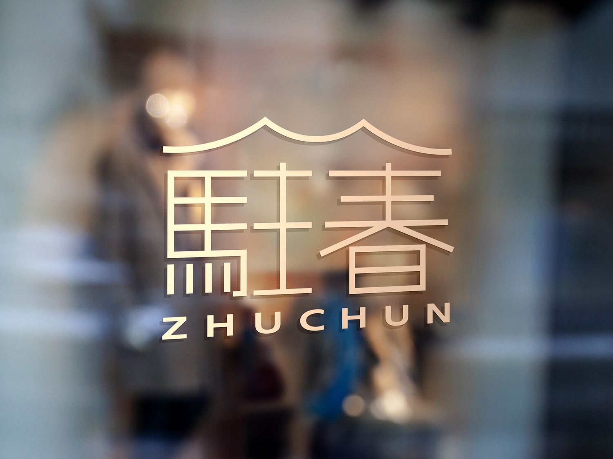
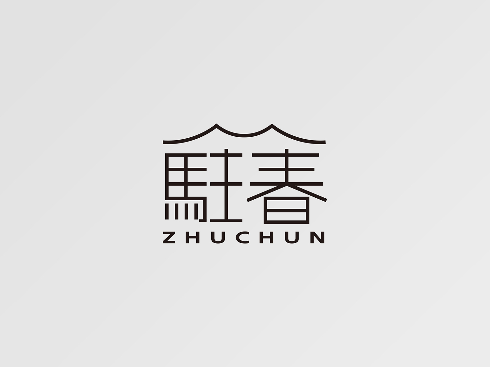
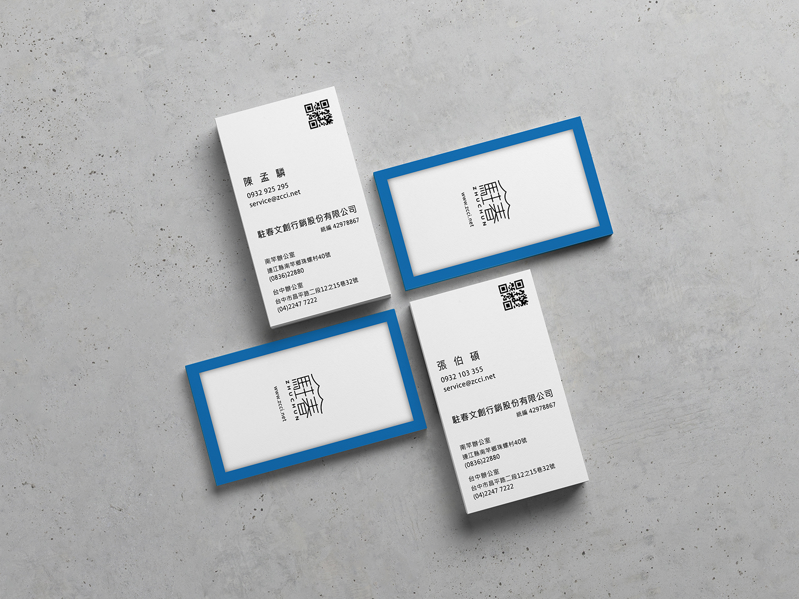

<div class="container pt-10 pt-lg-17">
    <div class="row justify-content-center">
        <div class="col-md-10">
            <h2 class="fs-4 lh-base mb-4">駐春文創</h2>
            <h3 class="fs-6 fw-normal lh-base mb-8">2018｜Logo、名片、視覺應用
                <br>Photoshop、Illustrator
            </h3>
            <div class="row mb-8 mb-md-6">
                <div class="col-lg-8">
                    <p class="fw-light text-dark">
                        駐春文創為位於馬祖的行銷設計公司，Logo 取當地具特色之封火牆「M」做上方線條，及閩東建築方磚意象設計中文字體，傳遞其希望推廣在地文化特色的理念。
                    </p>
                </div>
            </div>
            <ul class="row g-0 list-unstyled mb-3">
                <li class="col-12 mb-5 mb-lg-6">
                    
                </li>
                <li class="col-12 mb-5 mb-lg-6">
                    
                </li>
                <li class="col-12">
                    
                </li>
            </ul>
            <div class="d-flex justify-content-between align-items-center mt-9 mt-md-8 mb-2">
                <a class="btn btn-outline-primary rounded-pill fs-md-5 py-2 py-md-3 px-8 px-md-13" href="works.html">all works</a>
                <div class="d-flex">
                    <a href="./works_yuan-bin.html">
                        <span class="material-icons-outlined align-middle fs-md-3 me-6 me-md-7">
                            chevron_left
                        </span>
                    </a>
                    <a href="./works_gotravel.html">
                        <span class="material-icons-outlined align-middle fs-md-3">
                            chevron_right
                        </span>
                    </a>
                </div>
            </div>
        </div>
    </div>
</div>